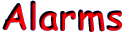
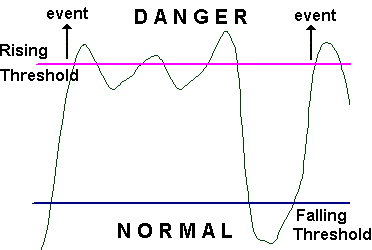

(1.3.6.1.2.1.16.3)
When your network’s conditions are getting worse, you want to know it and here
it comes from. You want it fast, not when everything get collapsed.
The alarm group is tasked with the job of listing the set of symptoms that
spells
trouble. The
alarm
thresholds have to be configured for danger zone. Problems
may due to too much activity or too little activity.
Rising and Falling Threshold.
When a network is going wrong, it usually stay as it is or gets only a little
better. The Rising Threshold is a threshold that is crossed once when things
begin to be wrong, a
trap
is sent at this time.
The level may decrease a little bit and grow again to cross the Rising
Threshold, and you may receive a lot of
traps in that case. The Falling Threshold is there to save too many traps
sendings.
The Falling Threshold is a point under which the network states is normal. And
if
the level don’t cross the Falling Threshold before it rose again over the
Rising Threshold there won’t be traps.

Behavior crossing a Rising Thresholds.
Configuring Alarms.
The main values needed to configure the alarms are :
-
Monitoring interval overwhich data sample are made.
-
Variable to be sampled.
-
Rising and Falling Thresholds used to detect when trouble
starts and ends.
-
Event (if any) that takes place when Rising Threshold is
crossed.
-
Event (if any) that takes place when Falling Threshold is crossed.
The threshold can only be set by numeric variables. Thresholds are only used for
gauge
, it is stupid to use threshold for a counter (even if it warps around).
For counter, a delta value is better to be used, then a threshold can be add.
Alarm Table.
In the table the operator can configure the symptoms that spells trouble. An
entry identifies a variable, a time interval, the kind of count that has to be
tested, the threshold (rising and falling) with its corresponding event.